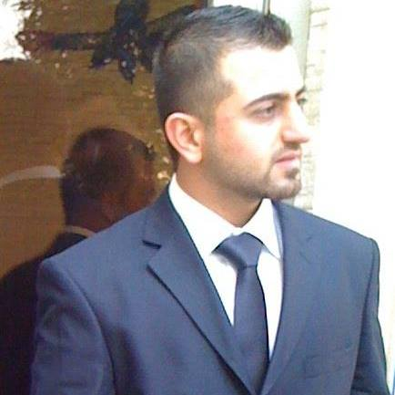
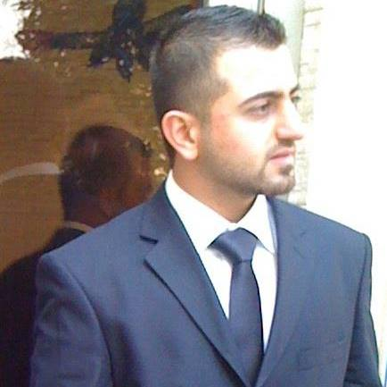
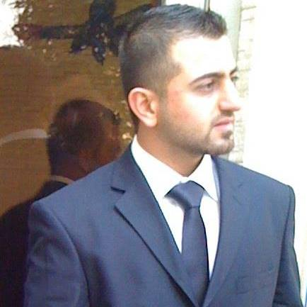
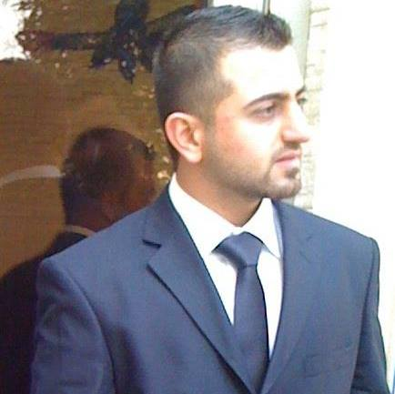

Mohammed Ali kamil
I'm a Software Engineer
 

Since May 2012
Bachelor Of Softwear Engineering,
BAGHDAD COLLEGE OF ECONOMIC SCIENCES UNIVERSITY
3.6 GPA Ranked 5th in the department of 138 Students
2019–Present
• Manage quota for west division using work force scheduling management (WFX)
• Responsible for more than 350 techs all over region including add new, edit, and update tech profiles.
• Responsible in coordinating techs for the month ahead as required using work force management (CSG)
• Process all requested TEMs and intakes.
• Resolve assigned tickets through ERone ticket system
• Answer chats to provide excellent customer service.
2016–2019
• Working as a CDS supervisor De-escalation team using ERone tickets system
• Answer inbound Customer calls
• Troubleshoot
• Problem resolve
• Answer and solve Customer questions and complains
2014–2017
• Monitor CCTV (security camera system) throughout the hospital
• Observe and report any suspicious activities
• Welcoming visitors
• providing security and safety of all visitors and employees on Hospital Campus
2012–2013
• Effective Communication Skills with business owners
• Effective time management and organizational skills to insure orders are placed properly
• Handled multiple tasks with a competing deadlines with business owners
• Strong focus on the details for the job completion
• Worked collaboratively with others on the team
2012-2014
• Modified data analysis and create reports using MIS (The Oracle database system)
• Troubleshoot problem solving.
• Provided effective technical support for bank employees.
• Managed customer’s data using Fox Pro software.
2011-2012
• Network installation, Configuration, and Troubleshoot
• Troubleshoot windows server 2003, 2007/ windows xp, vista, 7
• Installed new software and applications
• Computer maintenance software and hardware.
• Provided superior customer experience
• Well organized and Self-confident
• Work well under pressure
• Work well with teams
• Love to learn and teach others
• Very Patient
• Knowledge in Microsoft Office products including Word, Excel and Outlook
• Excellent Customer Service and Great Communication Skills
• Fluent in Arabic and English